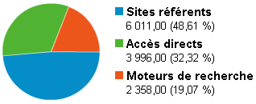
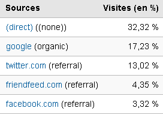

On va pouvoir dire merde à Google

trafic tcrouzet.com
Notre vie en ligne ne dépend plus de Google. Nous pouvons exister sans lui. Pour mon blog, il reste le premier apporteur de trafic mais Twitter, FriendFeed, Facebook… apportent plus que lui au total. Je trouve ça plutôt rassurant. En plus, c’est du trafic beaucoup moins aléatoire.

principales sources
Suite | 2009 | Sommaire | Texte publié mercredi 19 août 2009